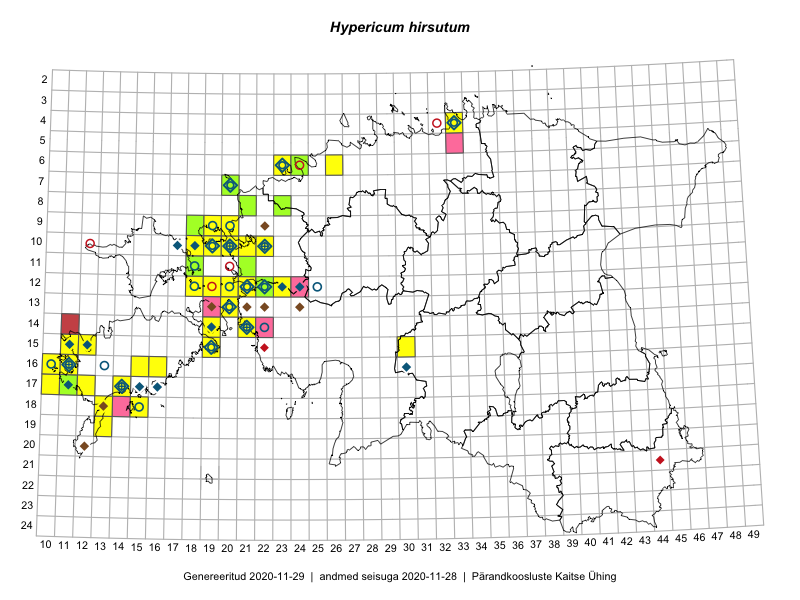

Hypericum hirsutum
Uuendatud: 2016-12-07
Kaardile koondatud taksonid: Hypericum hirsutum L.

Kaart põhineb 37 kirjel, neist vaatlusi 36 ja eksemplare 1. Taksonit on leitud 20 ruudust.
| Ruut | Vaatleja(d) | Vaatlusaeg | Kirje tüüp | Viide andmebaasikirjele |
|---|---|---|---|---|
| 12-20 | Ott Luuk | 2014-07-24 | ruut/ala | vaata PlutoFis |
| 12-22 | Ott Luuk, Jaak-Albert Metsoja | 2015-05-27 | ruut/ala | vaata PlutoFis |
| 12-21 | Tiit Hallikma, Toomas Kukk | 2015-08-27 | ruut/ala | vaata PlutoFis |
| 13-20 | Meeli Mesipuu | 2015-07-13 | ruut/ala | vaata PlutoFis |
| 13-20 | Meeli Mesipuu | 2015-07-13 | punkt | vaata PlutoFis |
| 17-10 | Mari Reitalu, Oliver Parrest | 2015-08-04 | ruut/ala | vaata PlutoFis |
| 15-11 | Mari Reitalu, Oliver Parrest | 2015-07-16 | ruut/ala | vaata PlutoFis |
| 18-13 | Mari Reitalu, Oliver Parrest | 2015-05-27 | ruut/ala | vaata PlutoFis |
| 17-14 | Karin Kikas, Elle Rajandu | 2015-07-22 | ruut/ala | vaata PlutoFis |
| 17-14 | Elle Rajandu, Karin Kikas | 2015-07-22 | punkt | vaata PlutoFis |
| 17-14 | Elle Rajandu, Karin Kikas | 2015-07-22 | punkt | vaata PlutoFis |
| 10-20 | Ott Luuk, Peedu Saar | 2014-07-29 | ruut/ala | vaata PlutoFis |
| 10-20 | Peedu Saar, Ott Luuk | 2014-08-29 | punkt | vaata PlutoFis |
| 17-10 | Oliver Parrest, Mari Reitalu | 2015-08-04 | punkt | vaata PlutoFis |
| 15-11 | Oliver Parrest, Mari Reitalu | 2015-07-16 | punkt | vaata PlutoFis |
| 16-15 | Meeli Mesipuu | 2016-06-28 | ruut/ala | vaata PlutoFis |
| 06-24 | Thea Kull, Helle Mäemets | 2016-07-07 | ruut/ala | vaata PlutoFis |
| 09-18 | Toomas Kukk, Sander Laherand | 2016-07-07 | ruut/ala | vaata PlutoFis |
| 14-21 | Erkki Otsman, Sergei Smirnov | 2016-06-24 | ruut/ala | vaata PlutoFis |
| 10-22 | Sirje Azarov, Oliver Parrest | 2016-07-07 | ruut/ala | vaata PlutoFis |
| 10-22 | Sirje Azarov, Oliver Parrest | 2016-07-07 | punkt | vaata PlutoFis |
| 10-22 | Sirje Azarov, Oliver Parrest | 2016-07-07 | punkt | vaata PlutoFis |
| 15-30 | Sirje Azarov, Meeli Mesipuu | 2016-07-21 | ruut/ala | vaata PlutoFis |
| 12-23 | Mari Reitalu, Oliver Parrest | 2016-07-05 | ruut/ala | vaata PlutoFis |
| 12-23 | Mari Reitalu, Oliver Parrest | 2016-07-05 | punkt | vaata PlutoFis |
| 14-21 | Erkki Otsman, Sergei Smirnov | 2016-06-24 | punkt | vaata PlutoFis |
| 08-21 | Tiit Hallikma, Tõnu Ploompuu | 2016-07-07 | ruut/ala | vaata PlutoFis |
| 14-19 | Meeli Mesipuu | 2016-06-29 | ruut/ala | vaata PlutoFis |
| 08-21 | Tiit Hallikma, Tõnu Ploompuu | 2016-07-07 | punkt | vaata PlutoFis |
| 09-20 | Peedu Saar, Timo Luhamäe | 2016-07-07 | ruut/ala | vaata PlutoFis |
| 09-20 | Peedu Saar, Timo Luhamäe | 2016-07-07 | punkt | vaata PlutoFis |
| 14-19 | Meeli Mesipuu | 2016-06-29 | punkt | vaata PlutoFis |
| 16-15 | Meeli Mesipuu | 2016-06-28 | punkt | vaata PlutoFis |
| 15-30 | Meeli Mesipuu, Sirje Azarov | 2016-07-21 | punkt | vaata PlutoFis |
| 15-30 | Meeli Mesipuu, Sirje Azarov | 2016-07-21 | punkt | vaata PlutoFis |
| 12-22 | Jaak-Albert Metsoja, Ott Luuk | 2015-05-27 | punkt | vaata PlutoFis |
| 08-23 | Ott Luuk | 2012-06-01 | eksemplar | vaata PlutoFis |